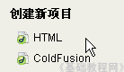
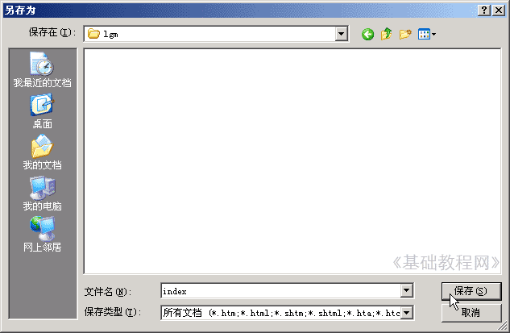
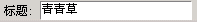
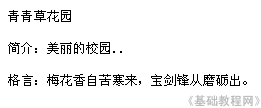
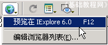

Dreamweaver 8 基础入门教程
创建网页 返回
这一节我们来学习如何创建网页，在基础0课程我们认识了网页，下面我们通过一个练习来看看怎样做一个网页；
1、启动Dreamweaver
1）点击“开始－所有程序－Macromedia－Macromedia Dreamweaver 8”，
2）在中间的“创建新项目”中点第一个 HTML，打开一个空白文档；

2、保存文件
1）点菜单“文件－保存”命令，弹出一个“另存为”对话框，在上边的保存在长条中，找到D:盘，在中间打开自己的文件夹；
2）在下边文件名那儿把Untitled-1删除，改成 index 然后点右边的“保存”按钮；

这儿注意两点，一个是保存位置在自己的文件夹，一个是文件名改成 index
3）回到窗口，这时候在标签上就有了文件的名称 ，然后在标签下面的文档工具栏中间找到“标题”；
，然后在标签下面的文档工具栏中间找到“标题”；
把标题改一下，这个网页内容是个人主页，把标题改成“青青草”
4）这样我们就修改好了标题，同时按下Ctrl和S键(Ctrl＋S组合键)，保存一下文件，标签上的星号消失；

3、输入内容
1）在中间工作区里点一下鼠标，这是光标在左上角一闪一闪，提示输入内容；
输入下面的三行内容，输完一行按一下回车键，输完按Ctrl＋S保存一下文件；

2）在标签下边的文档工具栏中，找到一个球体的预览图标，点一下出来一个下拉列表，

点第一个在IE浏览器中进行浏览，如果没保存，会出来一个提示，点“是”即可；
看一下自己做的页面，稍稍简单些，后面我们会逐步学习网页的修饰；
本节学习了创建网页的基本方法，学习了保存、标题、预览等基础知识，如果你成功地理解并完成了练习，请继续学习下一课内容；
本教程由86团学校TeliuTe制作|著作权所有
基础教程网：http://teliute.org/
美丽的校园……
转载和引用本站内容，请保留作者和本站链接。